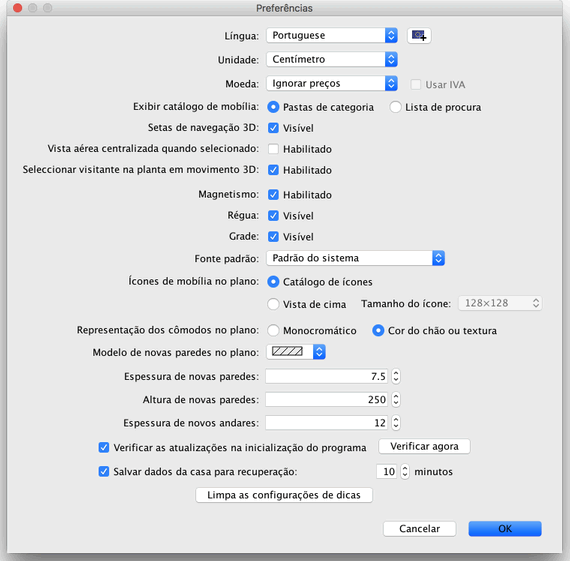

Para editar as preferências, escolha Sweet Home 3D > Preferências... no Mac OS X ou
Arquivo > Preferência... em outros sistemas.

Na janela de preferências, você pode escolher a Língua do Sweet Home 3D e a Unidade a ser usada
para mostrar a régua e
a grade no plano da casa, e mostrar os tamanhos.
A opção de Magnetismo habilita ou desabilita o magnetismo usado no plano da casa durante o
desenho das paredes e no
posicionamento das mobílias.
A opção de Régua permite mostrar ou não a régua no plano.
A opção de Grade permite mostrar ou não a grade no plano.
O valor de Largura de novas paredes configura a largura que serão desenhadas todas as novas paredes, a partir do momento em que essa configuração for aplicada.
O valor de Altura de novas paredes configura a altura que serão desenhadas todas as novas paredes, a partir do momento em que essa configuração for aplicada.
|